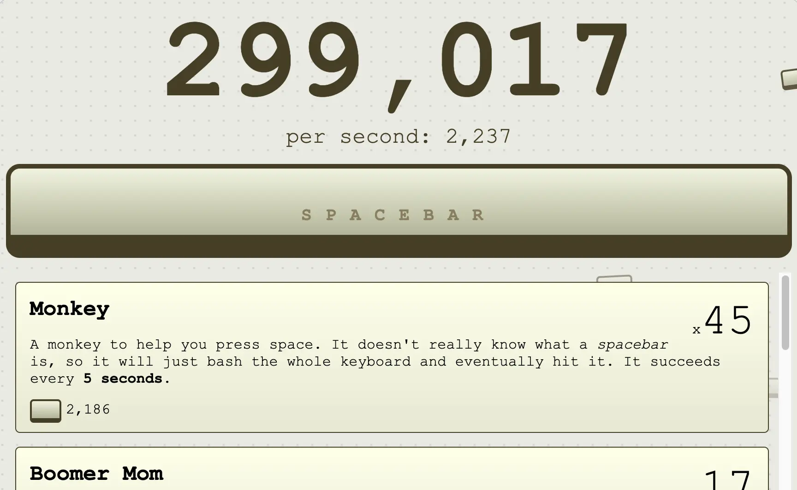

Spacebar Clicker
Press the spacebar as fast as you can to rack up points. Free, instant, no download — click into the game and go.
How to Play Spacebar Clicker
- Click on the game area to give it keyboard focus.
- Press the spacebar as fast as you can.
- Every press adds to your score.
- The timer counts down — try to beat your best before it hits zero.
About Spacebar Clicker
Spacebar Clicker is a fast-paced reaction game built around a single mechanic: press the spacebar as many times as you can before the timer hits zero. No menus, no tutorials, no loading screens — the game starts the instant the page loads.

How Scoring Works
Every spacebar press adds one point to your score. There are no combos or multipliers — raw speed is everything. When the timer runs out, your total is displayed and you can try again immediately.
Tips for a Higher Score
- Alternate two fingers on the spacebar to increase your press rate without tiring one hand.
- Keep your wrist loose — muscle tension cuts speed across repeated attempts.
- Click the game window first to confirm keyboard focus before the round starts.
- A mechanical keyboard with a light actuation force gives the most responsive feel.
Why Browser Games?
Browser games like Spacebar Clicker have zero friction: no app to install, no account to create, no permission to grant. They run on any device with a modern browser and a keyboard. For a quick break or a desk challenge with a coworker, a browser game is the fastest way from "I want to play" to actually playing.
Frequently Asked Questions
-
Does Spacebar Clicker work on mobile?
Yes. On mobile you can tap the screen to score points instead of pressing a key. The game works on any modern browser, desktop or phone.
-
Is Spacebar Clicker free to play?
Yes. No account needed, no download, no cost. Open the page and start pressing.
-
What browsers support Spacebar Clicker?
All modern browsers work — Chrome, Firefox, Safari, and Edge all run the game without plugins or extensions.
-
Can I use my mouse instead of the spacebar?
Yes. Clicking anywhere in the game area counts exactly the same as pressing the spacebar, so mouse clicks and screen taps both work.
-
What is CPS?
CPS stands for clicks per second — a measure of how fast you can press. Casual players typically score 5–8 CPS; with good technique, reaching 12 or more is possible.
-
Do I need to create an account to play?
No. Spacebar Clicker runs entirely in your browser — no login, no download, and no personal data required.
-
What is a good score in Spacebar Clicker?
It depends on which upgrades you unlock and how long you play. Focus on buying upgrades as soon as they appear — passive progress stacks quickly and your total will climb much faster than raw clicking alone.
-
Are "space bar clicker", "spacebar clicking game", or "space clicker" the same game?
Yes. These are common spelling variants and typos that all refer to the same game. Related searches include space bar game, spacebar click game, space clicker game, spacebar clicker online, keyboard clicker game, spacebar clicking, and clicker spacebar.